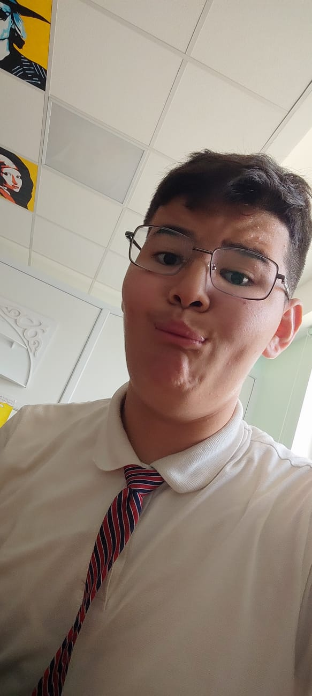
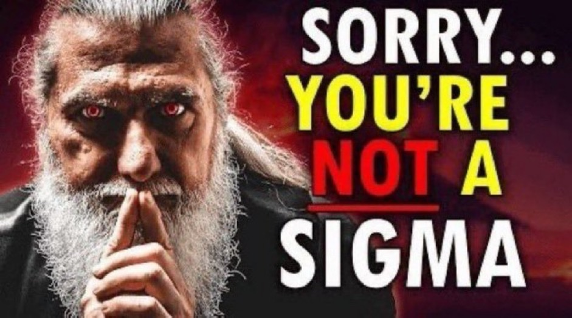
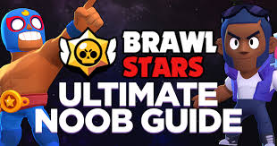

Амангелди Уаис - самый высокий, занимается футболом и аэрохоккеем но
очень умный программист (после меня). Однако вы не знаете что кроется
под его обманчивой маской...

- Уаис не сигма
-

-
Уаис нуб в бравл старсе
-

-
Чтобы стать высоким Уаис сьел своего брата близнеца на 4 месяце
эмбриондык даму
-
Подводя итоги, Уаис это не тот Уаис которого мы знаем. Старайтесь понизить
контакт с ним потому что он может быть опасен. Например он начнет вести
себя странно.
The unspoken truth about Wise